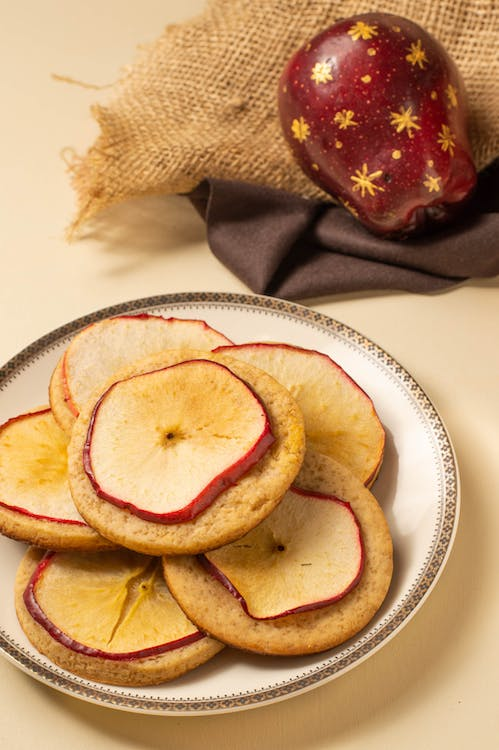

Apple Cookies

Description
These delicious Apple Cookies are perfect for an afternoon snack.
Enjoy a strong sugar taste that will make you question your life choices.
Ingredients
- Cookies
- 4 Granny Smith Apples (cored and sliced)
- White sugar (2 tablespoons)
- Ground cinnamon (1 tablespoon)
- Honey or maple syrup (Optional)
Steps
- Preheat the oven to 120°C (250°F).
- Whisk sugar and cinnamon in a large bowl and add the apple slices. Toss to coat.
- Set the apple slices on baking sheets and bake in the preheated oven until browned (~2 hours).
- Let it cool and serve the apples on top of the cookies.
- (Optional) If you want to get diabetes you can add honey or maple syrup on top.
photo credits: Ilaria